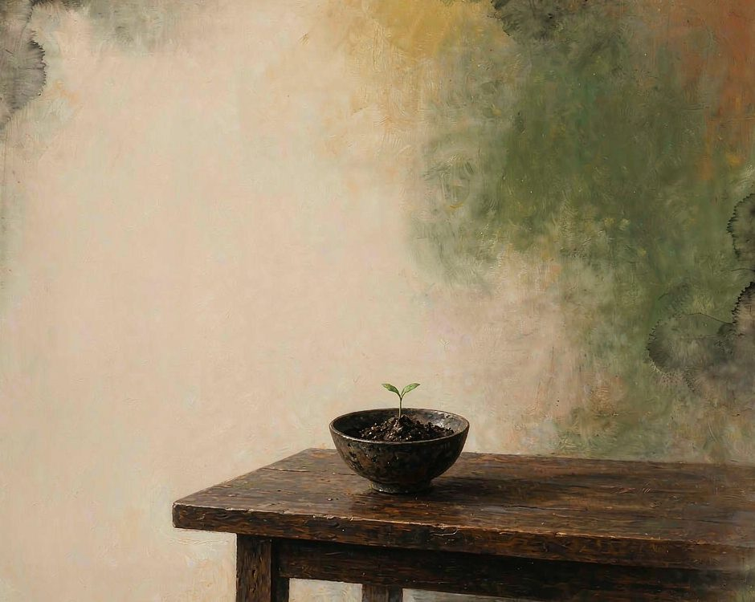
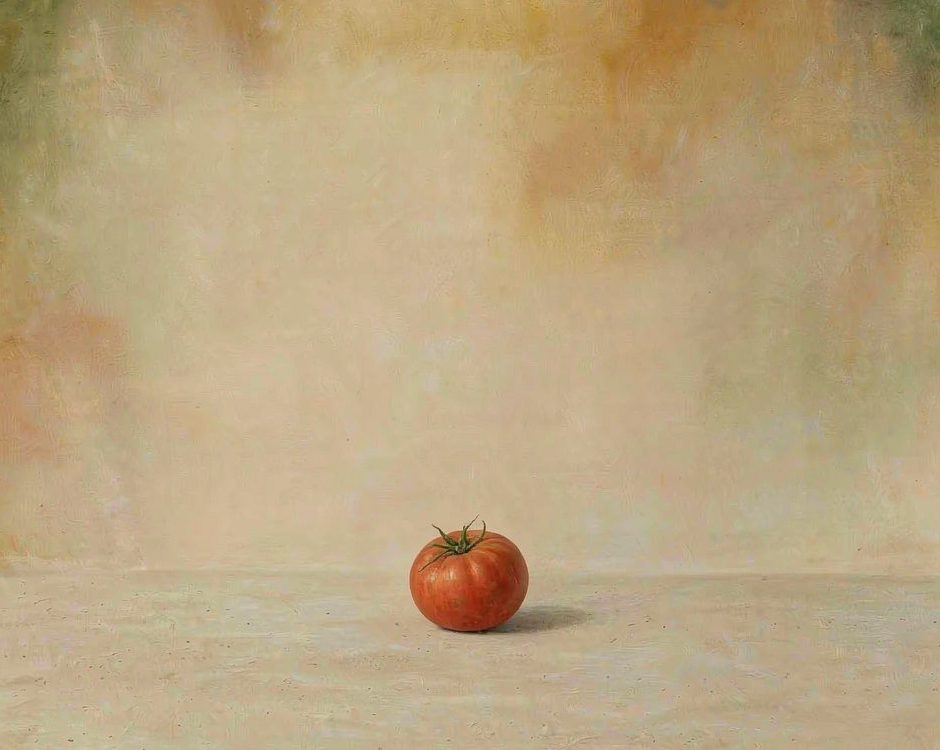
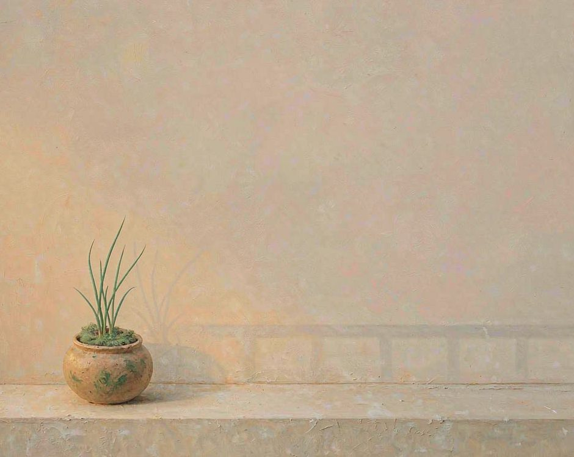

旅居昆明才发现这里是春城，万物都自然简单生长。
后来住进城里的大楼，三餐越来越像一种采买。

超市的货架把季节抹平了，冬天能买到夏天的番茄，远方运来的菜和本地田里的菜躺在同一盏灯下，看不出分别。手机点一下，饭菜就送到门口，包装袋上印着产地，可那行小字很少有人真的读。
餐桌还在，吃饭的人还在，只是饭桌和长出这顿饭的那块地，被一层又一层的环节隔开了。
人吃得越来越方便，心里却空出一块，说不清那块空是什么。
菜还是菜，饭还是饭，可这些从土里来的东西，长在什么土里，被谁的手种下，大多成了没人追问的事。

餐桌漂得越远，人就越难踏实
一座城离土地多远，住在城里的人就离踏实多远。
那层被隔开的关系，总得有人去接住，倒不一定要回去种田。
昆明的好处是，它一年四季都像春天，城边的田离得近，传统市场里很多菜还带着泥，拎回家时指尖还能蹭到一点湿。可即便在这样一座城，愿意弯下腰看看一棵菜从哪里来的人，也越来越少。
饭桌上的东西来得太容易，就容易把它当成理所当然，忘了它原本是土里长出来的活物，不是货架上标好价的商品。
把餐桌种回去，从一件很小的事开始
种回去不用闹得很大。
阳台角落摆两盆葱，想吃的时候掐一根，那根葱就不再是标价牌上的重量，而是浇过水、看过它长高的东西。
周末去传统市场，挑带着泥的马铃薯，跟卖菜的阿姨聊两句她今早几点去的地里，哪块田的茄子今天最嫩。斗南的花市天没亮就开，顺路带一把当季的菜，比在屏幕上下单多闻见一点泥土的气味。
这些事都小，小到不值得到动态上贴一张，可正是这些小动作，把餐桌和土地之间的线，一根一根接了起来。
线接上了，饭桌才重新有了根。

饭桌离泥土近一点，人离自己也就近一点。
慢，是把餐桌种回土地里的气候
这件事急不得。
昆明最教人的，是它不慌不忙的四季，该热的热一阵，该凉的凉一阵，从不催着什么快长。
把餐桌种回土地，本来就是一种慢下来的练习。开始在意一棵菜是哪个节气长的，愿意为一顿饭多走两步路，时间就不再是被赶着跑的东西，而成了手心里的温度。
真实接触不是什么大道理，是手指碰过泥土之后，留的那一点凉。顺天之时也不是老古话，是身体跟着季节走，反而比盯着屏幕更松快。
慢下来这两个字，落到饭桌上，就是多认得一种当季的菜，多记得一口饭是从哪块土里来的。
（可以试一个小练习。这周去一次传统市场，买一样你叫不出名字的菜，回家查清楚它长在什么季节、什么地里，再把它做成一顿饭。不用拍照片，不用写感想，只是让自己知道，这顿饭是从一块具体的土里来的。）
你呢。最近有没有那种，明明吃着饭，却突然想起这口饭是从哪块地来的时刻。